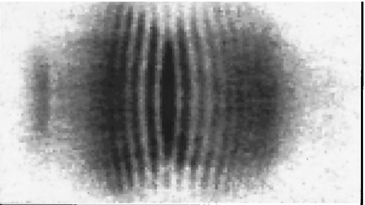
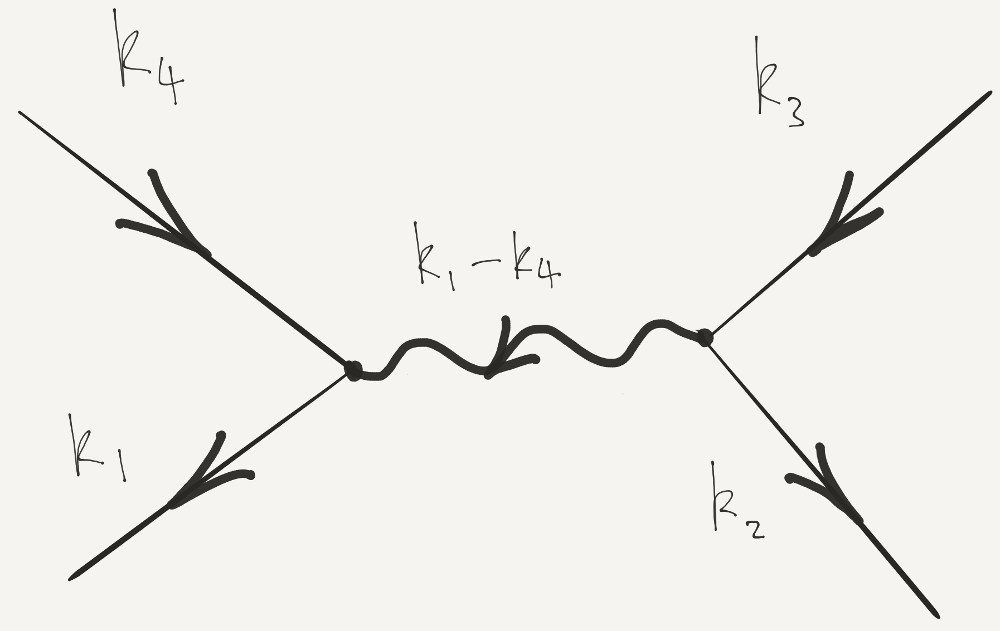
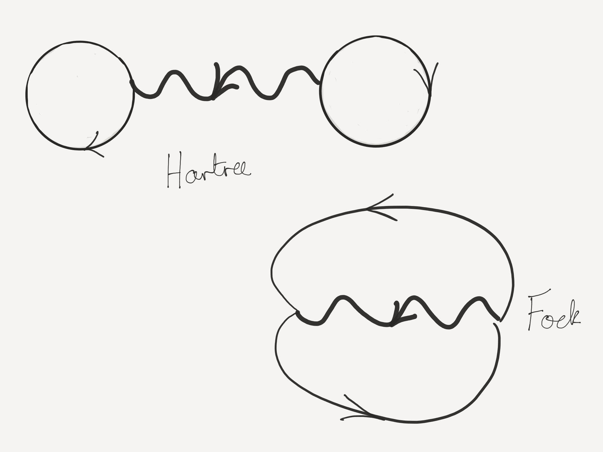

B is for Bunching
Bose or Fermi statistics gives rise to correlations in the positions of particles in a many body system, even in product states. These correlations affect the energy of many particle states, and provide the basis of the simplest approximate theories.
Reading: Nazarov and Danon (2013), Baym (2018)
1 Correlation Functions
In Lecture 1 we introduced the pair distribution function
\[ \rho_2(x_1,x_2) = N(N-1) \int dx_3\ldots dx_N \,\left|\Psi(x_1,x_2,\ldots,x_N)\right|^2, \tag{1}\]
which measures the likelihood of finding a pair of particles at \(x_1\) and \(x_2\). We also saw that \(\rho_2(x_1,x_2)\) could be related to the expectation of the product of the density operators \(\rho(x)\) at different points.
\[ \rho_2(x_1,x_2) = \langle{\Psi}\rvert\rho(x_1)\rho(x_2)\lvert{\Psi}\rangle - \rho_1(x_1)\delta(x_1-x_2), \tag{2}\]
where \(\rho_1(x)= \langle{\Psi}\rvert \rho(x) \lvert \Psi \rangle\). \(\rho_2(x,y)\) is the simplest example of a correlation function. Note also that the quantity \(\langle{\Psi}\rvert \rho_q \rho_{-q} \lvert{\Psi}\rangle\), used to quantify the crystalline order in a solid in Lecture 3, is just the Fourier transform of \(\rho_2(x_1,x_2)\). Higher correlation functions, involving products of more than two density operators, provide more detailed information on the distribution of the particles.
1.1 Correlation Functions in Second Quantization
We evaluated \(\rho_2(x,y)\) for the 1D Fermi gas:
\[ \rho_2(x,y) = n^2\left[1 - \left(\frac{\sin[k_\text{F}(x-y)]}{k_\text{F}(x-y)}\right)^2\right]. \tag{3}\]
Let’s see how to reproduce this result using second quantization. \(\rho_2(x,y)\) can be written in second quantized notation as
\[ \rho_2(x,y) =\langle{\Psi}\rvert \psi^\dagger(x)\psi^\dagger(y)\psi^{\vphantom{\dagger}}(y)\psi^{\vphantom{\dagger}}(x) \lvert \Psi \rangle. \tag{4}\]
Perhaps the simplest way to get this formula is to use the correspondence that we found in Lecture 5 \[ \begin{aligned} \lvert{\Psi}\rangle&\longleftrightarrow \Psi(x_1,\ldots, x_N)\nonumber\\ \psi(X)\lvert{\Psi}\rangle&\longleftrightarrow \sqrt{N}\Psi(X,x_1,\ldots, x_{N-1})\\ \end{aligned} \]
Show that Equation 1 implies Equation 4.
Equation 4 differs from \(\langle{\Psi}\rvert\rho(x)\rho(y)\lvert{\Psi}\rangle\) by the ordering of operators. Using the canonical commutation relations for the fields gives the relation Equation 2 for both bosons and fermions.
Let’s evaluate Equation 4 for the ground state of the Fermi gas. We will find the result for a general product state, using the same strategy as we used in the last lecture for the single particle density matrix. That is, we substitute the expansion of the fields \(\psi^{\vphantom{\dagger}}(x)\) and \(\psi^\dagger(x)\) in terms of the orthonormal single particle states making up the product state
\[ \begin{aligned} \psi^{\vphantom{\dagger}}(x)=\sum_{\beta} \varphi^{}_{\beta}(x)a^{\vphantom{\dagger}}_{\beta},\nonumber\\ \psi^\dagger(x)=\sum_{\beta} \varphi^*_{\beta}(x)a^\dagger_{\beta}. \end{aligned} \]
This gives
\[ \label{2nd_quant_CEval} \rho_2(x,y)=\sum_{\alpha, \beta, \gamma, \delta}\varphi^{*}_{\alpha}(x)\varphi^{*}_{\beta}(y)\varphi^{}_{\gamma}(y)\varphi^{}_{\delta}(x)\langle{\Psi}\rvert a^\dagger_{\alpha}a^\dagger_{\beta}a^{\vphantom{\dagger}}_{\gamma}a^{\vphantom{\dagger}}_{\delta} \lvert \Psi \rangle. \]
If we are considering the expectation in a state of the form \(\lvert{\mathbf{N}}\rangle\), we can see that an annihilation operator for a given single particle state must be accompanied by a creation operator for the same state. There are therefore two possibilities
\[ \begin{aligned} &\alpha =\delta,\, \beta=\gamma, \text{ or }\nonumber\\ &\alpha=\gamma,\, \beta=\delta, \end{aligned} \]
which give rise to two groups of terms
\[ \begin{aligned} \langle{\mathbf{N}}\rvert a^\dagger_{\alpha}a^\dagger_{\gamma}a^{\vphantom{\dagger}}_{\gamma}a^{\vphantom{\dagger}}_{\alpha} \lvert \mathbf{N} \rangle&=N_{\alpha}N_{\gamma}\nonumber\\ \langle{\mathbf{N}}\rvert a^\dagger_{\alpha}a^\dagger_{\gamma}a^{\vphantom{\dagger}}_{\alpha}a^{\vphantom{\dagger}}_{\gamma} \lvert \mathbf{N} \rangle&=\pm N_{\alpha}N_{\gamma}\qquad\text{if }\alpha\neq\gamma, \end{aligned} \]
the \(\pm\) corresponding to bosons and fermions respectively. Thus we have
\[ \begin{aligned} \rho_2(x,y)=\sum_{\alpha, \beta}N_\alpha N_\beta\left[\lvert{\varphi_{\alpha}(x)}\rvert^2\lvert{\varphi_{\beta}(y)}\rvert^2 \pm \varphi^*_\alpha(x)\varphi^{}_\alpha(y)\varphi^*_\beta(y)\varphi^{}_\beta(x) \right]. \end{aligned} \tag{5}\]
You might notice that this expression weights the case \(\alpha=\beta=\gamma=\delta\) by a factor \(2N_\alpha^2\) when it should have \(N_\alpha(N_\alpha-1)\) in the case of bosons, and zero for fermions. On the other hand, such cases amount to a sum over a single index, where the general case is a sum over a double index. It seems reasonable, then, that this accounting error is not important in the thermodynamic limit. For instance, in the case that \(\varphi_\alpha(x)\) are plane wave states we have the usual prescription
\[ \sum_\alpha(\cdots) \longrightarrow L\int (\cdots)\frac{dk}{2\pi}, \]
assuming the integrand is smooth. In this case the error in Equation 5 is a factor of \(L^{-1}\) smaller than what we retain. We do however have to be careful in Bose condensates, where one state has a finite fraction of the particles and this argument does not apply.
We can express the result Equation 5 in terms of the density and density matrix as
\[ \rho_2(x,y) = \rho_1(x)\rho_1(y) \pm g(x,y)g(y,x), \tag{6}\]
which, in the case of the ground state of the Fermi gas, reproduces Equation 3. We see that the correlation function vanishes as the separation \(x-y\to 0\), because \(g(x,x)=\langle\mathop{\rho(y)}\rangle\). This is, of course, another manifestation of the exclusion principle: it is not possible for two fermions to sit on top of each other. The scale of the ‘hole’ in the correlation function is of course set by the mean interparticle separation, or Fermi wavelength. Note also the decaying oscillations, indicating liquid-like correlations in the positions of the particles. These are sometimes known as Friedel oscillations.

For bosons the situation is very different. If \(g(x,y)\to 0\) as \(\lvert{x-y}\rvert\to\infty\), the value of the correlation function as \(\lvert{x-y}\rvert\to 0\) is twice the value at \(\lvert{x-y}\rvert\to\infty\). This characteristic behavior is often termed bunching: a pair of bosons is more likely to be found at two nearby points than at two distant points.
Nothing about the result Equation 6 is special to 1D of course: one just has to recalculate the density and density matrix. Remember, though, that it does only apply to product states.
1.2 The Hanbury Brown and Twiss Effect
The result for the density correlations Equation 5 or Equation 6 can be viewed as a kind of interference effect that shows up in the correlations of the intensity of a quantum waves, even when there is no interference in the intensity itself. To illustrate this interpretation, we consider a classic experiment from with Bose condensates described in Andrews et al. (1997).
Consider a gas of \(N\) noninteracting bosons occupying the lowest energy level of some potential well: a Bose condensate. If the ground state wavefunction is \(\varphi_{0}(\mathbf{r})\), the \(N\)-body wavefunction for such a state is
\[ \Psi(\mathbf{r}_1,\mathbf{r}_2,\ldots,\mathbf{r}_N)=\prod_i^N \varphi_0(\mathbf{r}_i), \label{2nd_quant_BoseGroundState} \]
which we can write in second quantized notation as
\[ \lvert{\Psi}\rangle=\frac{1}{\sqrt{N!}}\left(a^\dagger_0\right)^N\lvert{\text{VAC}}\rangle, \]
where \(a^\dagger_0\) creates a particle in the state \(\varphi_0(\mathbf{r})\). Imagine that we took another well, also filled with \(N\) bosons, and placed it alongside the first. If we switch off the potentials at some instant, the particles will fly out, with wavefunctions orginating in the two wells overlapping. Precisely this experiment was reported in Andrews et al. (1997). What do we expect to see?
Let us denote by \(\varphi_L(\mathbf{r})\) and \(\varphi_R(\mathbf{r})\) the ground states of two spatially separated potential wells. First, consider a state where each boson is in a superposition of \(\varphi_L(\mathbf{r})\) and \(\varphi_R(\mathbf{r})\). Such a situation could arise by starting from a single well and adiabatically splitting it in two. We can write such a state as
\[ \lvert{\bar N_L,\bar N_R}\rangle_\theta\equiv\frac{1}{\sqrt{N!}}\left[\sqrt{\frac{\bar N_L}{N}}e^{-i\theta/2} a^\dagger_L+\sqrt{\frac{\bar N_R}{N}}e^{i\theta/2}a^\dagger_R\right]^N\lvert{\text{VAC}}\rangle, \label{more_two} \]
where \(\bar N_{L,R}\) are the expectation values of particle number in each state \(N=\bar N_L+\bar N_R\). We allow the system to evolve for some time \(t\), so that the two `clouds’ begin to overlap (typically achieved by allowing free expansion i.e. turning off the confining potentials). If we consider the time evolution in the Heisenberg picture then, as we saw last time, the field operator obeys the free particle Schrödinger equation (ignoring interactions)
\[ i\frac{\partial \psi^{\vphantom{\dagger}}(\mathbf{r},t)}{\partial t} = -\frac{1}{2m}\nabla^2\psi^{\vphantom{\dagger}}(\mathbf{r},t). \]
We write the field operator as
\[ \psi^{\vphantom{\dagger}}(\mathbf{r})=\varphi_L(\mathbf{r},t)a^{\vphantom{\dagger}}_L+\varphi_R(\mathbf{r},t)a^{\vphantom{\dagger}}_R+\cdots, \]
where the wavefunctions \(\varphi_{L/R}(\mathbf{r},t)\) are evolving freely, and the dots denote the other states in some complete orthogonal set that includes \(\varphi_L(\mathbf{r})\) and \(\varphi_R(\mathbf{r})\): we can ignore them because they are empty. A calculation of the expectation value of \(\rho(\mathbf{r})=\psi^\dagger(\mathbf{r})\psi^{\vphantom{\dagger}}(\mathbf{r})\) gives
\[ \begin{aligned} \rho_1(\mathbf{r},t)=\bar N_L|\varphi_L(\mathbf{r},t)|^2+\bar N_R|\varphi_R(\mathbf{r},t)|^2+\overbrace{2\sqrt{\bar N_L \bar N_R}\mathrm{Re}\,e^{i\theta}\,\varphi^*_L(\mathbf{r},t)\varphi_R(\mathbf{r},t)}^{\equiv\rho_{\mathrm{int}( \mathbf{r},t)}}. \end{aligned} \tag{7}\]
If the clouds begin to overlap, the last term in Equation 7 comes into play. Its origin is in quantum interference between the two coherent subsystems, showing that the relative phase has a real physical effect.
Consider a Gaussian wavefunction of width \(R_0\) at time \(t=0\). Show (by substitution into the Schrödinger equation is fine) that this function evolves as
\[ \varphi(\mathbf{r},t)=\frac{1}{\left(\pi R_t^{2}\right)^{3/4}}\exp\left[-\frac{\mathbf{r}^2\left(1+i t/m R_0^2)\right)}{2R_t^2}\right], \tag{8}\]
where
\[ R_t^2=R_0^2+\left(\frac{ t}{mR_0}\right)^2. \]
Equation 8 illustrates a very important point about the expansion of a gas. After a long period of expansion, the final density distribution is a reflection of the initial momentum distribution. This is simply because faster moving atoms fly further, so after time \(t\) an atom with velocity \(\mathbf{v}\) will be at position \(\mathbf{r}=\mathbf{v}t\) from the center of the trap, provided that this distance is large compared to \(R_{0}\), the initial radius of the gas. The \(t\to\infty\) limit of Equation 8 gives
\[ |\varphi(\mathbf{r},t\to\infty)|^{2}\propto \exp\left[-\left(\frac{m R_{0}\mathbf{r}}{ t}\right)^{2}\right], \label{2nd_quant_TimeOfFlight} \]
reflecting a Gaussian initial momentum distribution of width \(R_0^{-1}\). Imaging the density distribution after expansion is one of the most commonly used experimental techniques in ultracold physics, and yields information about the momentum distribution \(n(\mathbf{p})\equiv a^\dagger_{\mathbf{p}}a^{\vphantom{\dagger}}_{\mathbf{p}}\) before expansion.
Consider the evolution of two Gaussian wavepackets with width \(R_0\) at \(t=0\), separated by a distance \(d\gg R_0\)
\[ \varphi_{L,R}(\mathbf{r},t)=\frac{1}{\left(\pi R_t^{2}\right)^{3/4}}\exp\left[-\frac{\left(\mathbf{r}\pm\mathbf{d}/2\right)^2\left(1+i t/m R_0^2)\right)}{2R_t^2}\right], \]
The final term of Equation 7 is then
\[ \begin{aligned} \rho_{\mathrm{int}}(\mathbf{r},t)&=A(\mathbf{r},t)\cos\left[\theta+\frac{\mathbf{r} \cdot\mathbf{d}}{mR_0^2R_t^2}t\right]\nonumber\\ A(\mathbf{r},t)&=\frac{2\sqrt{\bar N_L\bar N_R}}{\pi^{3/2}R_t^3}\exp\left(-\frac{\mathbf{r}^2+\mathbf{d}^2/4}{R_t^2}\right) \label{int_term} \end{aligned} \]
The interference term therefore consists of regularly spaced fringes, with a separation at long times of \(2\pi t/md\).
Now we imagine doing the same thing with two condensates of fixed particle number, which bear no phase relation to one another. The system is described by the product state (often called a Fock state in this context)
\[ \lvert{N_L,N_R}\rangle\equiv\frac{1}{\sqrt{N_L! N_R!}}\left(a^\dagger_L\right)^{N_L}\left(a^\dagger_R\right)^{N_R}\lvert{\text{VAC}}\rangle. \]
Computing the density in the same way yields
\[ \rho_1(\mathbf{r},t)=N_L|\varphi_L(\mathbf{r},t)|^2+N_R|\varphi_R(\mathbf{r},t)|^2, \label{dens_fock} \]
which differs from the previous result by the absence of the interference term.
This is not the end of the story, however. When we look at an absorption image of the gas, we are not looking at an expectation value of \(\rho(\mathbf{r})\) but rather the measured value of some observable(s) \(\rho(\mathbf{r})\). The expectation value just tells us the result we would expect to get if we repeated the same experiment many times and averaged the result. We get more information by thinking about the correlation function of the density at two different points.
An application of our result Equation 5 for the density correlations gives
\[ \begin{aligned} \rho_2(\mathbf{r},\mathbf{r}')&=\rho_1(\mathbf{r})\rho_1(\mathbf{r}') +N_LN_{R}\varphi_L^*(\mathbf{r})\varphi_R^*(\mathbf{r}')\varphi_L(\mathbf{r}')\varphi_R(\mathbf{r}) \nonumber\\ &\qquad+N_{L}N_R\varphi_R^*(\mathbf{r})\varphi_L^*(\mathbf{r}') \varphi_R(\mathbf{r}')\varphi_L(\mathbf{r}). \end{aligned} \tag{9}\]
We see that the second line contains interference fringes, with the same spacing as before. The correlation function gives the relative probability of finding an atom at \(\mathbf{r}'\) if there is one at \(\mathbf{r}\). We conclude that in each measurement of the density, fringes are present but with a phase that varies between measurements, even if the samples are identically prepared.

The rather surprising implication is that predictions for measured quantities for a system in a Fock state are the same as in a relative phase state, but with a subsequent averaging over the phase.
Prove this by showing that the density matrix
\[ \rho=\int_0^{2\pi}\frac{d\theta}{2\pi}\lvert{\bar N_L,\bar N_R}\rangle_\theta\langle{\bar N_R,\bar N_L}\rvert_\theta \]
coincides with that of a mixture of Fock states with binomial distribution of atoms into states \(\varphi_{L}\), \(\varphi_{r}\). At large \(N\) this distribution becomes sharply peaked at occupations \(\bar N_L\), \(\bar N_R\).
The interference of two independent condensates was observed in 1997 in Andrews et al. (1997). The related question of whether two independent light sources give rise to interference was discussed much earlier in Magyar and Mandel (1963). The occurrence of interference fringes in a correlation function does not depend upon Bose condensation, although the phenomenon is very striking in this case because the fluctuations are parametrically as large as the \(\rho_1(\mathbf{r})\rho_1(\mathbf{r}')\) term in Equation 9. The general phenomenon is known as the Hanbury Brown and Twiss effect, which is the work of two people (not three): Robert Hanbury Brown and Richard Q. Twiss. For the history and early applications of this effect, see Baym (1999) and Kleppner (2008).
2 Hartree–Fock Theory
We now apply these ideas to the approximate calculation of the energy of an interacting many body system.
2.1 The Hartree and Fock Potentials
Recall from last time that a two body interaction has the form
\[ \hat H_\text{int.} = \sum_{j<k} U(\mathbf{r}_j-\mathbf{r}_k)=\frac{1}{2}\int d\mathbf{r}_1 d\mathbf{r}_2\, U(\mathbf{r}_1-\mathbf{r}_2)\psi^\dagger(\mathbf{r}_1)\psi^\dagger(\mathbf{r}_2)\psi^{\vphantom{\dagger}}(\mathbf{r}_2)\psi^{\vphantom{\dagger}}(\mathbf{r}_1). \]
Since
\[ \sum_{j<k} U(\mathbf{r}_j-\mathbf{r}_k) = \frac{1}{2}\int \sum_{j\neq k}\delta(\mathbf{r}_1-\mathbf{r}_j)\delta(\mathbf{r}_2-\mathbf{r}_k)U(\mathbf{r}_1-\mathbf{r}_2) d\mathbf{r}_1 d\mathbf{r}_2, \]
we can immediately write down the expectation value of the interaction energy in a product state
\[ \begin{aligned} \label{2nd_quant_HartreeFock} \langle \hat V\rangle &= \overbrace{\frac{1}{2}\int d\mathbf{r}\, d\mathbf{r}'\, \rho_1(\mathbf{r}) U(\mathbf{r}-\mathbf{r}')\rho_1(\mathbf{r}')}^{\equiv E_\text{Hartree}} \nonumber\\ &\qquad\overbrace{\pm \frac{1}{2}\int d\mathbf{r}\, d\mathbf{r}'\, U(\mathbf{r}-\mathbf{r}')g(\mathbf{r},\mathbf{r}')g(\mathbf{r}',\mathbf{r})}^{\equiv E_\text{Fock}}. \end{aligned} \]
The two terms are known as the Hartree and Fock (or exchange) contributions, respectively. This expression lies at the core of the variational Hartree–Fock method for many body systems, which approximates the ground state by a product state. The Hartree term looks completely reasonable, while the Fock potential doesn’t look like a potential at all, and reflects the non-classical correlations.
2.2 Hartree–Fock for the Electron Gas
How does the Hartree–Fock picture change when we have spin? Let’s consider a system of spin-1/2 fermions. We can describe such a system in terms of field operators \(\psi^{\vphantom{\dagger}}_\sigma(\mathbf{r})\), \(\psi^\dagger_\sigma(\mathbf{r}')\) satisfying the canonical anticommutation relations
\[ \begin{gathered} \left\{\psi^{\vphantom{\dagger}}_{\sigma_1}(\mathbf{r}_1),\psi^\dagger_{\sigma_2}(\mathbf{r}_2)\right\}=\delta_{\sigma_1\sigma_2}\delta(\mathbf{r}_1-\mathbf{r}_2)\nonumber\\ \left\{\psi^{\vphantom{\dagger}}_{\sigma_1}(\mathbf{r}_1),\psi^{\vphantom{\dagger}}_{\sigma_2}(\mathbf{r}_2)\right\}=\left\{\psi^\dagger_{\sigma_1}(\mathbf{r}_1),\psi^\dagger_{\sigma_2}(\mathbf{r}_2)\right\}=0. \label{2nd_quant_PositionRelationsAnti} \end{gathered} \]
The density matrix is a matrix in spin space as well as real space
\[ g_{\sigma_1\sigma_2}(\mathbf{r}_1,\mathbf{r}_2) = \langle{\Psi}\rvert \psi^\dagger_{\sigma_1}(\mathbf{r}_1)\psi^{\vphantom{\dagger}}_{\sigma_2}(\mathbf{r}_2) \lvert \Psi \rangle. \]
From \(g_{\sigma_1\sigma_2}(\mathbf{r}_1,\mathbf{r}_2)\) we can extract the spin density as well the density
\[ \mathbf{\rho}(\mathbf{r}) = \mathrm{tr}\left[g(\mathbf{r},\mathbf{r})\right],\quad \mathbf{s}(\mathbf{r}) = \frac{1}{2}\mathrm{tr}\left[\boldsymbol{\sigma}g(\mathbf{r},\mathbf{r})\right]. \]
(I’ve dropped the subscript from \(\rho_1(\mathbf{r})\) here.) An spin-independent interaction potential is described by a Hamiltonian of the form
\[ \hat H_\text{int.} = \frac{1}{2}\sum_{\sigma_1,\sigma_2}\int d\mathbf{r}_1 d\mathbf{r}_2\, U(\mathbf{r}_1-\mathbf{r}_2)\psi^\dagger_{\sigma_1}(\mathbf{r}_1)\psi^\dagger_{\sigma_2}(\mathbf{r}_2)\psi^{\vphantom{\dagger}}_{\sigma_2}(\mathbf{r}_2)\psi^{\vphantom{\dagger}}_{\sigma_1}(\mathbf{r}_1). \]
The Hartree–Fock energy is then
\[ \begin{aligned} \langle \hat H_\text{int.}\rangle &=\frac{1}{2}\int d\mathbf{r}\, d\mathbf{r}'\, \rho(\mathbf{r}) U(\mathbf{r}-\mathbf{r}')\rho(\mathbf{r}')\nonumber\\ &- \frac{1}{2}\int d\mathbf{r}\, d\mathbf{r}'\, U(\mathbf{r}-\mathbf{r}')\mathrm{tr}\left[g(\mathbf{r},\mathbf{r}')g(\mathbf{r}',\mathbf{r})\right]. \label{2nd_quant_HFSpin} \end{aligned} \]
The Fock term can be rewritten in a more useful way using the identity
\[ \delta_{ab}\delta_{cd} = \frac{1}{2}\left[\boldsymbol{\sigma}_{a c}\cdot \boldsymbol{\sigma}_{d b} + \delta_{ac}\delta_{db}\right]. \tag{10}\]
One way to understand Equation 10 is to to think of the two Pauli matrices as acting on two spin 1/2s (as we did in Lecture 4, in which case we can work in the basis \(\lvert{s_1}\rangle\lvert{s_2}\rangle\) and we have
\[ \boldsymbol{\sigma}_1\cdot \boldsymbol{\sigma}_2+ \mathbb{1}_1\mathbb{1}_2 = 2\begin{pmatrix} 1 & 0 & 0 & 0 \\ 0 & 0 & 1 & 0 \\ 0 & 1 & 0 & 0 \\ 0 & 0 & 0 & 1 \end{pmatrix}. \] The matrix elements of the right hand side are then \(2\delta_{s_1,s_2'}\delta_{s_2,s_1'}\).
which gives
\[ \begin{aligned} E_{\text{Fock}} &=-\frac{1}{4} \int d\mathbf{r}\, d\mathbf{r}'\, U(\mathbf{r}-\mathbf{r}')\mathrm{tr}\left[g(\mathbf{r},\mathbf{r}')\right]\mathrm{tr}\left[g(\mathbf{r}',\mathbf{r})\right]\nonumber\\&-\frac{1}{4}\int d\mathbf{r}\, d\mathbf{r}'\, U(\mathbf{r}-\mathbf{r}')\mathrm{tr}\left[\boldsymbol{\sigma}g(\mathbf{r},\mathbf{r}')\right]\cdot\mathrm{tr}\left[\boldsymbol{\sigma}g(\mathbf{r}',\mathbf{r})\right]. \end{aligned} \]
Suppose we had a \(\delta\)-function interaction \(U(\mathbf{r})=V_0 \delta(\mathbf{r})\). Then the Fock energy can be written
\[ \begin{aligned} E_{\text{Fock}} =-\frac{V_0}{4} \int d\mathbf{r}\, \rho(\mathbf{r})^2-V_0\int d\mathbf{r}\, \mathbf{s}(\mathbf{r})\cdot\mathbf{s}(\mathbf{r}) \end{aligned} \]
The second term favours ferromagnetism for repulsive interactions. The physical origin is the same as the Hund’s rule coupling in atoms: fermions in different spin states can sit at the same spatial location, while those in the same spin state must be in different locations. For repulsive interactions occupying the same spin state is energetically favourable.
This is most succintly put by the formula
\[ \rho_2(\mathbf{r},\mathbf{r}) = \frac{1}{2}\rho(\mathbf{r})^2 - 2\mathbf{s}(\mathbf{r})\cdot\mathbf{s}(\mathbf{r}) \]
The Hartree–Fock energy forms the basis of a variational method using product states as variational wavefunctions. For a Hamiltonian with translational invariance, like
\[ H = \int d\mathbf{r}\frac{1}{2m}\nabla\psi^\dagger\cdot\nabla\psi^{\vphantom{\dagger}}+ \frac{1}{2}\int d\mathbf{r}d\mathbf{r}' U(\mathbf{r}-\mathbf{r}')\psi^\dagger(\mathbf{r})\psi^\dagger(\mathbf{r}')\psi^{\vphantom{\dagger}}(\mathbf{r}')\psi^{\vphantom{\dagger}}(\mathbf{r}), \tag{11}\]
this is not too bad, as we are guaranteed to be working with plane wave single particle states. Then the only variational parameters are the occupancies of these states: we’ll meet an example in the next section. If translational symmetry is broken by introducing a potential \(U(\mathbf{r})\) into the single particle part of Equation 11, say, the situation is more complicated. We may be tempted to use single particle states that are the eigenstates of the single particle part of the Hamiltonian, but there is no real justification for this, and one has to allow the states, as well as the occupancies, to vary.
2.3 Stoner Criterion for Ferromagnetism
Let us try to put a bit more flesh on the idea that repulsive interactions favour ferromagnetism in fermionic systems. We will continue to use the model interaction \(U(\mathbf{r})=V_0\delta(\mathbf{r})\) that we introduced in the previous section. Of course, this isn’t a realistic interaction between electrons in a metal, say, but as we’ll see in Lecture 11, the long-ranged Coulomb interaction is screened and becomes finite-ranged. Thus our model is not a bad approximation to the effective interaction between electrons in a metal.
Polarizing the spins in a Fermi gas is not without cost (otherwise everything would be ferromagnetic!): there is a price to pay in increased kinetic energy. To understand why this is so, consider the ground state kinetic energy of \(N\) (spinless) fermions in three dimensions, obtained from
\[ \begin{aligned} N = \sum_{|\mathbf{k}|<k_\text{F}} 1 &\longrightarrow L^3 \int_{|\mathbf{k}|<k_\text{F}} \frac{d\mathbf{k}}{(2\pi)^3} = \frac{k_\text{F}^3 L^3}{6\pi^2} \nonumber\\ E_\text{kin} = \sum_{|\mathbf{k}|<k_\text{F}} \frac{\mathbf{k}^2}{2m} &\longrightarrow L^3 \int_{|\mathbf{k}|<k_\text{F}} \frac{d\mathbf{k}}{(2\pi)^3} \frac{\mathbf{k}^2}{2m}\\ &= \frac{k_\text{F}^5 L^3}{20\pi^2 m} = L^3 \frac{3}{10m}(6\pi^2)^{2/3} n^{5/3},\nonumber \end{aligned} \]
(The assumption of a quadratic dispersion is not important here. More generally, we fill a band structure.) where \(n = \frac{N}{L^3}\) is the mean density. Assuming a system of fermions with spin is now polarized in the \(z\)-direction, we have differing densities \(n_{\uparrow,\downarrow}\) of spin up and spin down fermions. Their total energy is
\[ E_\text{kin}(n_\uparrow,n_\downarrow) = \frac{cL^3}{m}\left(n_\uparrow^{5/3}+n_\downarrow^{5/3}\right), \]
where \(c=\frac{3}{10}(6\pi^2)^{2/3}\). In terms of the overall density \(n=n_\uparrow+n_\downarrow\) and density of spin \(\bar s = \left(n_\uparrow-n_\downarrow\right)/2\), we have
\[ E_\text{kin}(n, \bar s) = \frac{cL^3}{m}\left(\left[n/2+\bar s\right]^{5/3}+\left[n/2-\bar s\right]^{5/3}\right). \]
Alternatively, write this in terms of the polarization \(P \equiv \frac{n_\uparrow-n_\downarrow}{n}\) that varies in the range \([-1,1]\) as
\[ E_\text{kin}(P) = \frac{E_\text{K}}{2}\left[(1+P)^{5/3}+(1-P)^{5/3}\right]. \]
We see that, on account of the convexity of \(x^{5/3}\), \(E^{(0)}_\text{kin}(n, \bar s)\) is minimized for \(s=0\).
Let’s compare this with the effect of interactions. In the short-ranged model introduced above, the total Hartree–Fock energy is
\[ E_\text{HF}(n,\bar s) = \frac{V_0L^3}{2} n^2 - \frac{V_0L^3}{2} \left(n_\uparrow^2+n_\downarrow^2\right) = \frac{V_0L^3}{2} \left(\frac{1}{2}n^2 - 2\bar s^2\right). \]
We write this in terms of the polarization as
\[ E_\text{HF}(P) = \frac{E_V}{2}(1-P^2). \]
Minimize the total energy \(E(P) = E_\text{kin}(P) + E_\text{HF}(P)\) to show
- For \(E_V/E_K<10/9\) the ground state is non-magnetic.
- As \(E_V/E_K\) increases past \(10/9\) the magnetization begins to increase.
- At \(E_V/E_K>\frac{5}{6}2^{2/3}\) is the ground state is fully polarized.
One shouldn’t take these numerical values too seriously given the simplicity of the model, but they illustrate the physical principles at work behind the appearance of ferromagnetism in metals.
2.4 Excited State Energies
So far we have discussed properties of the ground state only. We can, however, evaluate the Hartree–Fock energy in a product state describing an excited state of a noninteracting system. This gives the first order perturbation theory correction to the excited state energy. For concreteness we will stick with fermions for now, though the method is general.
If we work in a translationally invariant system, the appropriate single particle states are plane waves. We write the field operators in the plane wave basis as
\[ \begin{aligned} \psi^{\vphantom{\dagger}}(\mathbf{r})\equiv\frac{1}{L^{3/2}}\sum_{\mathbf{k}} \exp(i\mathbf{k}\cdot\mathbf{r})a^{\vphantom{\dagger}}_{\mathbf{k}},\nonumber\\ \psi^\dagger(\mathbf{r})\equiv\frac{1}{L^{3/2}}\sum_{\mathbf{k}} \exp(-i\mathbf{k}\cdot\mathbf{r})a^\dagger_{\mathbf{k}}, \end{aligned} \]
and represent the interaction potential in terms of its Fourier components
\[ U(\mathbf{r}-\mathbf{r}') = \frac{1}{L^3}\sum_\mathbf{q}\tilde U(\mathbf{q}) \exp(i\mathbf{q}\cdot[\mathbf{r}-\mathbf{r}']). \]
The interaction Hamiltonian for spinless particles can then be written
\[ \hat H_\text{int.} = \frac{1}{2L^3} \sum_{\mathbf{k}_1+\mathbf{k}_2=\mathbf{k}_3+\mathbf{k}_4} \tilde U(\mathbf{k}_1-\mathbf{k}_4) a^\dagger_{\mathbf{k}_1}a^\dagger_{\mathbf{k}_2}a^{\vphantom{\dagger}}_{\mathbf{k}_3}a^{\vphantom{\dagger}}_{\mathbf{k}_4}. \tag{12}\]
When written in this way, interaction Hamiltonians are sometimes associated with the graphical representation below, one of the ingredients of the Feynman diagram technique for performing perturbation theory calculations in field theories. The incoming lines (arrows in) represent particles being removed (in momentum states \(\mathbf{k}_3\) and \(\mathbf{k}_4\)) and the outgoing lines represent particles added (momenta \(\mathbf{k}_1\) and \(\mathbf{k}_2\)). The wiggly line represents \(\tilde V(\mathbf{q})\). The conservation of momentum at the vertices is a consequence of the translational invariance of the problem: the two integrations over \(\mathbf{r}\) and \(\mathbf{r}'\) give rise to two \(\delta\)-functions that perform this function.

As we’ve already discussed, the expectation value of Equation 12 in a product state of momentum eigenstates gives two terms, with different ‘pairings’ of creation operators with annihilation operators. We can represent these two terms graphically as shown below.

Evaluating the two contributions in terms of the occupation numbers gives
\[ \langle{\mathbf{N}}\rvert \hat H_\text{int.} \lvert \mathbf{N} \rangle = \frac{1}{2V}\tilde U(0) \sum_{\mathbf{k}_1,\mathbf{k}_2} N_{\mathbf{k}_1}N_{\mathbf{k}_2} - \frac{1}{2V} \sum_{\mathbf{k}_1,\mathbf{k}_2} \tilde U(\mathbf{k}_1-\mathbf{k}_2) N_{\mathbf{k}_1}N_{\mathbf{k}_2} \]
While the Hartree term just depends on the total number of particles, the Fock term depends on the individual occupations. The interaction energy to add a single particle to state \(\mathbf{k}\) is
\[ \Delta U_{\mathbf{k}} = \frac{\tilde U(0)}{V} \sum_{\mathbf{k}'} N_{\mathbf{k}'} - \frac{1}{V}\sum_{\mathbf{k}'} \tilde U(\mathbf{k}-\mathbf{k}') N_{\mathbf{k}'} \]